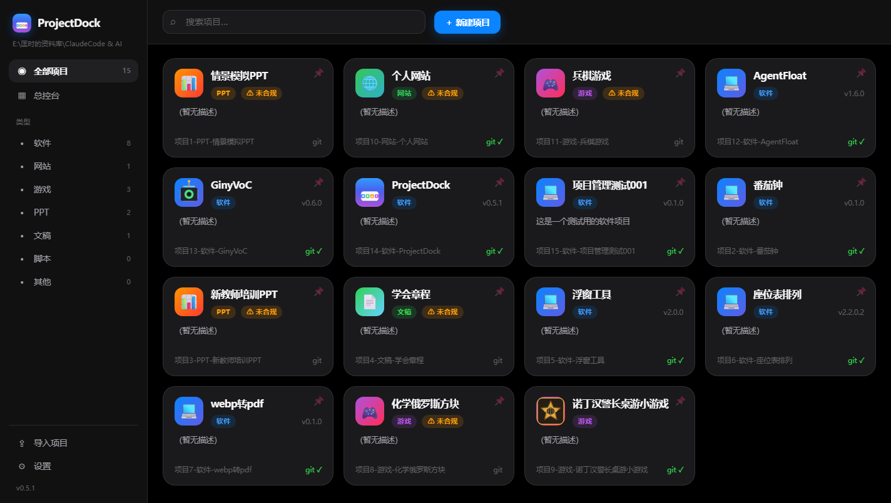

iOS 风格界面
毛玻璃、圆角、轻盈动效——项目管理也可以很好看。
iOS 风格界面 × 版本 / 构建 / 发布全流程 × 内置 AI 助手——把开发者最琐碎的杂活，一次收干净。

DEMO
三个最常用的场景，看完就知道它是不是你要的工具。
7 类项目统一收进卡片墙：状态、版本、最近更新，一眼可见。
CHANGELOG、构建产物、git tag、发布——原本要开三个工具的事情，这里一条流水线。
告诉它要做什么：先备份、再执行、后报告；拿不准的事，它会先问你。
FEATURES
六件事，覆盖你每天在项目上最烦的部分。
毛玻璃、圆角、轻盈动效——项目管理也可以很好看。
软件 / 网站 / 游戏 / PPT / 文稿 / 脚本 / 其他，一键生成骨架。
VERSION / CHANGELOG / 构建产物自动读取，版本迭代一目了然。
版本号 → 更新日志 → 构建 → git tag → 提交，一条龙不漏步。
Claude Code / pi 可切换；流式回显 + 可点击决策卡片。
一键快照、路径穿越防护，工具永不擅自删除你的东西。
CREATE
选一个项目类型（软件 / 网站 / 游戏 / PPT / 文稿 / 脚本 / 其他），ProjectDock 自动生成 README、VERSION、CHANGELOG、.gitignore、AGENTS.md 骨架，接着完成 git init 与首次提交——需要的话，连 GitHub 仓库都帮你创建好并推上去。
RELEASE
读取项目里的 VERSION、CHANGELOG 与 versions 目录，直接呈现版本迭代、更新日志与构建产物；发布时跟着「发布向导」走完：版本号 → 更新日志 → 构建 → git tag → 提交。
AI AGENT
内置 pi / Claude Code 双后端，随时切换；每个任务执行前自动备份、执行后生成 Git 报告；拿不准的动作会弹出决策卡片等你拍板；每个项目有独立的 AI 操作日志时间线。还可以让 AI 帮你撰写 TECHSTACK.md 技术栈文档，并在「技术栈」页在线编辑。
SAFETY
工具的边界很明确：只创建与归档，永不擅自删除；备份一键快照 / 恢复（带路径穿越防护）；内置合规化检查。把项目交给它，睡觉是安稳的。
SCREENS
点击查看大图（部分截图正在补拍中）。
CHANGELOG
完整日志见 GitHub Releases。
TECHSTACK.md 上线（技术栈 Tab / 在线编辑 / AI 撰写 / CLI 子命令）；总控台 AI 对话与 Agent 选择卡片；160 项测试通过、覆盖率 83.32%。
内置登录、README 内嵌渲染、一键创建并推送仓库；iOS 风格图标生成管线；AI 决策卡片与全屏对话。
7 类项目预设、版本与构建管理、发布向导、SQLite 索引 + 磁盘扫描双轨管理、备份与恢复。
DOWNLOAD
免费使用 · 本地运行 · 数据不出本机
国内高速镜像（Cloudflare R2）· 也可以前往 GitHub Releases 获取官方原件。
* 若提示缺少 WebView2，可按提示安装微软官方免费组件。
FAQ
当前完全免费使用；未来如有变化会提前公告，已发布的版本不受影响。
不会。工具只创建与归档、不擅自删除；AI 任务执行前自动备份，关键动作先征求你同意。
两种后端任选：pi 或 Claude Code（装了哪个用哪个，可随时切换）；配置与密钥保存在本机。
管理功能完全本地运行；只有「创建 / 推送 GitHub 仓库」和「AI 对话」需要网络。
目前是 Windows 10 / 11（64 位）。
覆盖安装即可升级；在控制面板可完整卸载，不会触碰你的项目文件夹。
欢迎提 GitHub Issues，或在主站找到我。